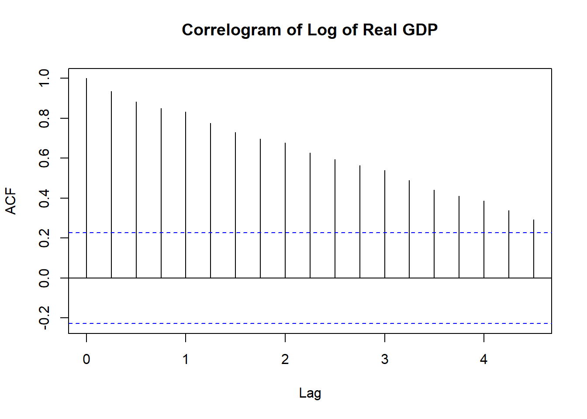

Time Series Analysis-GDP
Basic Time Series Analysis
This part is for basic time series analysis on Quarterly GDP data (source:IMF). It shows quarterly Real Gross Domestic Product seasonally Un-adjusted calculated in domestic currency (value in Million) for the period 2nd Quarter 2004 to 3rd Quarter 2022.
| Year | Quarter | NGDP_R_NSA_XDC |
|---|---|---|
| 2004 | 2 | 11733600 |
| 2004 | 3 | 11859400 |
| 2004 | 4 | 13303400 |
| 2005 | 1 | 13824500 |
| 2005 | 2 | 12815900 |
| 2005 | 3 | 12860700 |
| 2005 | 4 | 14497100 |
| 2006 | 1 | 15256400 |
| 2006 | 2 | 13765000 |
| 2006 | 3 | 14177500 |
| 2006 | 4 | 15871100 |
| 2007 | 1 | 16751500 |
| 2007 | 2 | 15253000 |
| 2007 | 3 | 15473400 |
| 2007 | 4 | 17545100 |
| 2008 | 1 | 18229900 |
| 2008 | 2 | 16486000 |
| 2008 | 3 | 16515600 |
| 2008 | 4 | 17814300 |
| 2009 | 1 | 18272900 |
| 2009 | 2 | 17309300 |
| 2009 | 3 | 17664900 |
| 2009 | 4 | 19277100 |
| 2010 | 1 | 20696300 |
| 2010 | 2 | 19091100 |
| 2010 | 3 | 19374700 |
| 2010 | 4 | 21337900 |
| 2011 | 1 | 22833400 |
| 2011 | 2 | 21028600 |
| 2011 | 3 | 20428700 |
| 2011 | 4 | 22251400 |
| 2012 | 1 | 23654600 |
| 2012 | 2 | 22052200 |
| 2012 | 3 | 21959500 |
| 2012 | 4 | 23447700 |
| 2013 | 1 | 24670800 |
| 2013 | 2 | 23474000 |
| 2013 | 3 | 23570800 |
| 2013 | 4 | 24980000 |
| 2014 | 1 | 25989000 |
| 2014 | 2 | 25357500 |
| 2014 | 3 | 25622400 |
| 2014 | 4 | 26459500 |
| 2015 | 1 | 27837300 |
| 2015 | 2 | 27282800 |
| 2015 | 3 | 27680900 |
| 2015 | 4 | 28363900 |
| 2016 | 1 | 30367400 |
| 2016 | 2 | 29650900 |
| 2016 | 3 | 30357600 |
| 2016 | 4 | 30796200 |
| 2017 | 1 | 32277300 |
| 2017 | 2 | 31463400 |
| 2017 | 3 | 31972000 |
| 2017 | 4 | 32849900 |
| 2018 | 1 | 35160600 |
| 2018 | 2 | 33823000 |
| 2018 | 3 | 34036400 |
| 2018 | 4 | 34897600 |
| 2019 | 1 | 37172100 |
| 2019 | 2 | 35489600 |
| 2019 | 3 | 35462200 |
| 2019 | 4 | 35997000 |
| 2020 | 1 | 38210800 |
| 2020 | 2 | 27036000 |
| 2020 | 3 | 33109300 |
| 2020 | 4 | 36262200 |
| 2021 | 1 | 39177300 |
| 2021 | 2 | 32464300 |
| 2021 | 3 | 35891800 |
| 2021 | 4 | 38218800 |
| 2022 | 1 | 40780300 |
| 2022 | 2 | 36851300 |
| 2022 | 3 | 38165800 |
There are total 74 rows using nrow() formula which means
it is equivalent to 74 quarters or almost 18 years data. Now to apply
time series analysis it is important to convert the data in TS
(Time Series) format. Figure 1 below shows the interactive line
chart to see the visual trend in the data, as expected it shows
increasing trend with a steep fall due to COVID-19 pandemic.
Fig 1. India quarterly Real GDP in Domestic Currency [Rs in Lakh Crores]
Note: The variation in data is very high since 2020 (COVID-19 Pandemic starts).
It is best practice to convert it into log form to see the linear trend in the data instead of changing y-axis units.
Fig 2. India quarterly Real log GDP
Now, if we apply linear regression model on the Nominal Un-adjusted quarterly GDP then,
##
## Call:
## lm(formula = ts_gdp_data2 ~ time(ts_gdp_data2))
##
## Residuals:
## Min 1Q Median 3Q Max
## -0.3048 -0.0405 0.0186 0.0468 0.1172
##
## Coefficients:
## Estimate Std. Error t value Pr(>|t|)
## (Intercept) -97.81979 3.19108 -30.6 <0.0000000000000002 ***
## time(ts_gdp_data2) 0.06388 0.00158 40.3 <0.0000000000000002 ***
## ---
## Signif. codes: 0 '***' 0.001 '**' 0.01 '*' 0.05 '.' 0.1 ' ' 1
##
## Residual standard error: 0.0728 on 72 degrees of freedom
## Multiple R-squared: 0.958, Adjusted R-squared: 0.957
## F-statistic: 1.62e+03 on 1 and 72 DF, p-value: <0.0000000000000002Here, the overall model is statistically significant as the p-value is very small. Both the intercept and slope coefficients are statistically significant but the intercept coefficient does not provide any economic reasoning due to negative value.

Fig 2. Log of India Quarterly Real GDP and linear trend
Figure 2 shows the linear trend and log of quarterly India Real GDP values. One of the important assumption for linear regression is Residuals Distributed Normally. It is also to know the residuals are random or not, which is essential for explaining relation in the data.
Fig 3. Histogram of Residuals to Check Normality
Fig 4. Q-Q Plot to check Normality
Fig 5. Residuals vs fitted - Homoscedasticity check
##
## Shapiro-Wilk normality test
##
## data: gdp.residuals
## W = 0.9, p-value = 0.00003As we can see that the residuals are Non-normally distributed or Skewed distributed both visually and using the test. So, this model can’t be used for inferential or predictive purpose.
Time Series Modeling
As we have seen above that the normal linear regression is not able to predict or make inferences for time series data. The main reason for that is natural correlation from its lag values (time variables are auto correlated).
Stationary time series is an important concept from time series modelling perspective because time series models build on stationary time series data. Here Weak stationary time series is the one with,
1. No trend - we want our time series data to be stationary which means we do not want any systematic change in mean like no trend in the data.
2. No Change in Variation - We do not want a systematic change in variation. No Periodic Fluctuations.
In real world we do have the data as Non-stationary time series data like shown in above Fig 1. So we do some transformation if our data is non stationary.

To go further for time series modeling, it is important to make it stationary.
Correlogram after detrend the data,

WIP